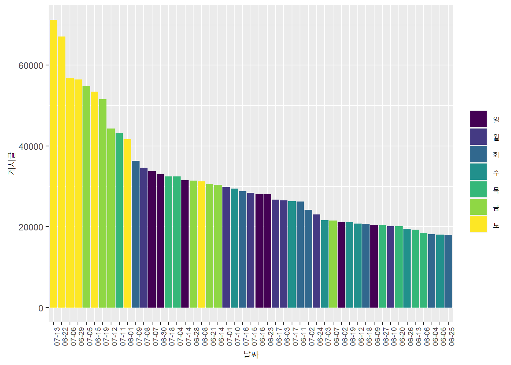

Chapter 4 데이터 시각화
본격적인 분석에 앞서 이전 파트에서 전처리한 데이터들을 기반으로 간단한 시각화를 진행해 볼까 합니다.
데이터 시각화를 통해 지금 가지고있는 데이터의 특성을 파악하고, 특징적인 정보가 있는지를 한번 살펴 보겠습니다.
먼저 앞장에서 다루었던 전처리한 데이터의 형태입니다.
4.1 회차별 게시글 수 비교
## # A tibble: 7 x 2
## # Groups: p_episode [7]
## p_episode n
## <fct> <int>
## 1 5 165419
## 2 6 168423
## 3 7 200536
## 4 8 207370
## 5 9 252058
## 6 10 278199
## 7 11 270115## `summarise()` ungrouping output (override with `.groups` argument)그래프의 x축은 방송 회차 기간을 의미하고, y축은 게시글 수를 의미합니다.
방송이 진행될수록 작성된 글 수는 증가하는 면모를 보입니다.
4.2 요일별 게시글 수 비교
## # A tibble: 7 x 2
## # Groups: p_wday [7]
## p_wday n
## <ord> <int>
## 1 일 195895
## 2 월 189089
## 3 화 172095
## 4 수 156579
## 5 목 186362
## 6 금 264421
## 7 토 377679## `summarise()` ungrouping output (override with `.groups` argument)방송이 방영되던 금요일과, 방송이 끝난 당일인 토요일에 작성된 글 수가 많은 것을 확인할 수 있습니다.
4.3 일자별 게시글 수 비교
pxdata %>%
group_by(p_ymd) %>%
count() %>%
mutate(p_wday = lubridate::wday(p_ymd, label = T),
p_md = str_sub(p_ymd, 6, 10)) %>%
ggplot(aes(x = as.factor(p_md), y = n)) +
geom_col(aes(fill = p_wday)) +
theme(axis.text.x = element_text(angle = 90, size = 7)) +
labs(x = '날짜', y = '게시글', fill = "")pxdata %>%
group_by(p_ymd) %>%
count() %>%
mutate(p_wday = lubridate::wday(p_ymd, label = T),
p_md = str_sub(p_ymd, 6, 10)) %>%
ggplot(aes(x = reorder(as.factor(p_md), -n), y = n)) +
geom_col(aes(fill = p_wday)) +
theme(axis.text.x = element_text(angle = 90, size = 7)) +
labs(x = '날짜', y = '게시글', fill = "")
pxdata %>%
group_by(p_ymd) %>%
count() %>%
mutate(p_wday = lubridate::wday(p_ymd, label = T),
p_md = str_sub(p_ymd, 6, 10)) %>%
ggplot(aes(x = as.factor(p_md), y = n)) +
geom_col() +
geom_text(aes(label = n), vjust = -1, size = 2) +
theme(axis.text.x = element_text(size = 0)) +
facet_wrap(~ p_wday) +
labs(x = '날짜', y = '게시글')일자별로 나누어 보았을 경우에도 금요일과 토요일에 사람들의 프로그램에 대한 관심도가 높은것을 확인할 수 있습니다.
다음으로 시청자들로부터 어느 연습생의 언급량이 많았는지를 도출해 보도록 하겠습니다.